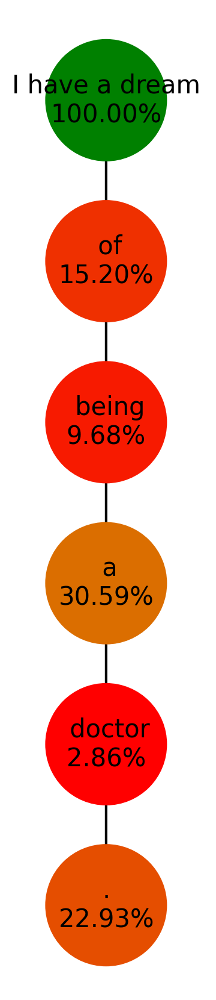

At every step, an LLM produces a full probability distribution over its entire vocabulary for what comes next, given everything generated so far:
$x$ — the prompt; $y_{<t}$ — tokens generated so far; $V$ — the vocabulary; $q_\theta$ — the model's predicted probability for each candidate token $v$.
Decoding is the rule that turns this distribution into one actual token $y_t$, every step, until a full response is built. The model never chooses a word directly — it only ever hands over a distribution. Everything in this deck is a different answer to the same question: given this distribution, which token do we actually output?
The simplest possible rule: at every step, output whichever token the model currently thinks is most likely.
Repeat for $t=1,2,\dots$ until an end-of-sequence token is produced or a maximum length is reached. No randomness, no lookahead — purely the single best next token, every time.
Context: "The weather today is ___". Step 1's distribution:
| token | bright | sunny | cold |
|---|---|---|---|
| $q_\theta$ | 0.50 | 0.35 | 0.15 |
Greedy picks "bright" (0.50, the highest). Step 2's distribution, now conditioned on "...is bright ___":
| token | outside | today | again |
|---|---|---|---|
| $q_\theta$ | 0.50 | 0.30 | 0.20 |
Greedy picks "outside" (0.50). Final sequence: "bright outside", with overall probability $0.50\times0.50=0.25$.

GPT-2, prompted with "I have a dream," greedily decoded one token at a time. Each circle is the token greedy picked at that step, colored by how confident the model was (green = high probability, red = low).
Notice how often the "best available" token still has a fairly low probability — 15.20% for "of," just 2.86% for "doctor." Greedy always takes the top of the list, even when the list itself is unconfident.
Greedy only ever asks "what's best right now?" — never "what leads to the best overall sequence?" Extend the weather example with one more branch at step 1:
| step 1 | $q_\theta$ | best step 2 given this | full sequence $P$ |
|---|---|---|---|
| bright | 0.50 | outside (0.50) | 0.50 × 0.50 = 0.25 |
| sunny | 0.35 | outside (0.95) | 0.35 × 0.95 = 0.3325 |
| cold | 0.15 | outside (0.60) | 0.15 × 0.60 = 0.09 |
"Sunny" only looked second-best at step 1 — but every continuation of it is far more certain ("of course it's sunny outside"). The truly best sequence, "sunny outside" at 0.3325, is one greedy can never reach: it locked in "bright" before ever seeing step 2.
Holtzman et al. (2020) measured what happens once a phrase repeats: the probability of repeating it again keeps climbing.
"The probability of a repeated phrase increases with each repetition... we found this effect to hold for the vast majority of phrases we tested." Once a maximization-based decoder (greedy, or beam search) repeats a phrase, that same phrase becomes the single most likely continuation again — and again — trapping the model in a loop it can never escape by always taking the top choice.
This is why purely-greedy generation on open-ended prompts often degrades into "I don't know. I don't know. I don't know...".
Instead of keeping only the single best partial sequence, keep the $B$ best ones — the beam width — and expand all of them at every step:
Setting $B=1$ reduces beam search exactly to greedy decoding — there is only ever one sequence to keep.
Same prompt, beam width $B=2$. Step 1: keep the top 2 of 3 tokens, prune the rest.
| token | bright | sunny | cold |
|---|---|---|---|
| $q_\theta$ | 0.50 kept | 0.35 kept | 0.15 pruned |
Step 2: expand both kept beams (using the same per-token distributions as before), then keep only the top 2 of all 6 resulting candidates:
| candidate sequence | $P$ | |
|---|---|---|
| sunny outside | 0.35×0.95 = 0.3325 | kept |
| bright outside | 0.50×0.50 = 0.2500 | kept |
| bright today | 0.1500 | pruned |
| bright again | 0.1000 | pruned |
| sunny today | 0.0105 | pruned |
| sunny again | 0.0070 | pruned |
Final answer: "sunny outside" (0.3325) — beam search recovers exactly the sequence greedy decoding missed, by keeping "sunny" alive long enough to see how good its continuation was.
Every extra token multiplies in another probability $\le 1$, so raw sequence probability always shrinks with length — a plain sum of log-probabilities unfairly penalizes longer candidates just for having more tokens. Wu et al. (2016, Google's NMT system) score each beam candidate $Y$ instead with:
$|Y|$ — the number of tokens in $Y$; $\alpha \in (0,1)$ — strength of the length penalty (the paper reports $\alpha\in[0.6,0.7]$ working best); $lp(Y)$ grows with length, so dividing by it discounts the raw penalty for being long.
| candidate | tokens | $\log P$ | $lp(Y)$, $\alpha=0.6$ | $s(Y)$ |
|---|---|---|---|---|
| A: two 0.60-probability tokens | 2 | −1.0217 | 1.0969 | −0.9314 |
| B: four 0.75-probability tokens | 4 | −1.1507 | 1.2754 | −0.9022 |
Raw log-probability prefers A ($-1.0217 > -1.1507$) purely because it's shorter — even though B is more confident on every single token (0.75 vs. 0.60). The length-normalized score correctly flips the preference to B ($-0.9022 > -0.9314$).
Beam search finds a higher-probability sequence than greedy — but higher probability is not the same as higher quality. Holtzman et al. (2020) found beam search text is often just as repetitive as greedy, and additionally tends toward generic, bland phrasing: maximizing probability pulls toward whatever is safest, not what a person would actually write.
Tasks with one (or a few) essentially "correct" output — translation, summarization, code — reward finding the single best sequence, and beam search is standard there. Open-ended generation — chat, stories, brainstorming — has many equally valid continuations; relentlessly maximizing probability actively hurts it.
Instead of always taking the top of the distribution, treat $q_\theta(\cdot\mid y_{<t},x)$ as an actual probability distribution and draw the next token randomly from it:
A token with probability 0.05 is chosen roughly 1 time in 20, not never. This immediately breaks the repetition feedback loop (a repeated phrase no longer has to win every time) and produces different output on every run — the point of every method on the remaining slides is controlling this randomness so it helps rather than hurts.
Rescale the logits before the softmax, with temperature $T$:
$z_i$ — the model's raw logit for token $i$; $T=1$ is the ordinary softmax; $T<1$ sharpens the distribution toward the top token; $T>1$ flattens it, giving the rest of the vocabulary more of a chance.
Context: "Paris is the capital of ___", logits $[3.0, 0.5, 0.3, 0.0, -0.5, -1.5]$:
| $T$ | France | Europe | the | a | country | Spain |
|---|---|---|---|---|---|---|
| 0.5 | 0.9854 | 0.0066 | 0.0045 | 0.0024 | 0.0009 | 0.0001 |
| 1.0 | 0.8062 | 0.0662 | 0.0542 | 0.0401 | 0.0243 | 0.0090 |
| 2.0 | 0.4883 | 0.1399 | 0.1266 | 0.1089 | 0.0848 | 0.0515 |
At $T=0.5$ "France" is nearly certain (98.5%); at $T=2.0$ the other five tokens together have over half the probability mass. Temperature never changes the ranking of tokens — only how sharply the distribution favors the top of it.
Fan, Lewis & Dauphin (2018) propose truncating the tail before sampling: keep only the $k$ highest-probability tokens, renormalize just those, and sample from what's left.
Same "capital of" distribution, $k=3$:
| token | France | Europe | the |
|---|---|---|---|
| original $q_\theta$ | 0.8062 | 0.0662 | 0.0542 |
| renormalized $q'$ | 0.8701 | 0.0714 | 0.0585 |
"a," "country," and "Spain" are discarded entirely (probability set to zero), and the remaining three are rescaled to sum to 1 again.
Holtzman et al. (2020) truncate by cumulative probability instead of by count. The nucleus $V^{(p)}$ is the smallest set of tokens whose probabilities sum to at least $p$:
$p' = \sum_{v\in V^{(p)}} q_\theta(v)$, the actual cumulative probability reached. Same distribution, $p=0.90$: sort by probability, accumulate until the running sum passes 0.90.
| token | France | Europe | the | a |
|---|---|---|---|---|
| $q_\theta$ | 0.8062 | 0.0662 | 0.0542 | 0.0401 |
| cumulative | 0.8062 | 0.8724 | 0.9266 ≥ 0.90 | stop here |
| renormalized $q'$ | 0.8701 | 0.0714 | 0.0585 | 0.0000 |
The nucleus happens to be the same three tokens as top-k here — the next slide shows a distribution where that stops being true.
Try both methods on a second, much flatter distribution — "My favorite color is ___":
| token | blue | red | green | yellow | purple | orange |
|---|---|---|---|---|---|---|
| $q_\theta$ | 0.2181 | 0.1974 | 0.1786 | 0.1616 | 0.1462 | 0.0980 |
| peaked ("capital of") | flat ("favorite color") | |
|---|---|---|
| top-k, k=3 | France, Europe, the | blue, red, green — arbitrarily cuts off yellow (0.1616), almost as likely as green (0.1786) |
| top-p, p=0.90 | France, Europe, the | blue, red, green, yellow, purple — keeps 5 tokens, since no single one dominates |
Top-k always keeps exactly 3 tokens, whether the distribution is confident or not. Top-p's nucleus adapts its size to the shape of the distribution: small when the model is sure, large when it's genuinely unsure — exactly the flat-vs-peaked problem Holtzman et al. identify as top-k's weakness.
Nguyen et al. (2024) scale the cutoff by the top token's own probability, rather than fixing it in advance:
$p_{\text{base}}\in(0,1]$ — a fixed hyperparameter, typically 0.05–0.1; the actual threshold $p_{\text{scaled}}$ rises and falls automatically with the model's own confidence $p_{\max}$.
| distribution | $p_{\max}$ | $p_{\text{scaled}}=0.10\times p_{\max}$ | tokens kept |
|---|---|---|---|
| peaked | 0.8062 | 0.0806 | France only |
| flat | 0.2181 | 0.0218 | all 6 tokens |
When the model is very confident, min-p's threshold rises with it and prunes aggressively — here down to a single token. When the model is unsure, the threshold stays low and nearly everything plausible survives.
| rule | on the peaked distribution | on the flat distribution | |
|---|---|---|---|
| top-k | always keep exactly $k$ | 3 tokens (fine here) | 3 tokens (cuts off 2 nearly-as-likely ones) |
| top-p | keep until cumulative $\ge p$ | 3 tokens | 5 tokens (adapts to the flatness) |
| min-p | keep while $q_\theta\ge p_{\text{base}}\!\times\! p_{\max}$ | 1 token (very aggressive when sure) | 6 tokens (very permissive when unsure) |
All three exist for the same reason: a single fixed number of tokens is the wrong knob to turn, because how many tokens are actually plausible changes at every single step. Top-p and min-p each adapt to that in a different way — top-p from the shape of the cumulative curve, min-p from the model's own peak confidence.
Keskar et al. (2019, CTRL) penalize tokens the model already used, directly at the logit level, before the softmax:
$\theta>1$ — the penalty strength; dividing an already-used token's logit by $\theta$ before the softmax pulls its probability down without touching any other token directly.
| token | the | cat (already used) | sat | again |
|---|---|---|---|---|
| logit | 1.2 | 0.8 | 2.0 | 0.3 |
| logit after $\div\theta{=}1.5$ | 1.2 | 0.5333 | 2.0 | 0.3 |
| $P$ before penalty | 0.2324 | 0.1558 | 0.5173 | 0.0945 |
| $P$ after penalty | 0.2412 | 0.1238 | 0.5369 | 0.0981 |
"cat" drops from 15.58% to 12.38%, and every other token's share rises slightly to compensate — a direct, tunable nudge away from repeating what's already been said.
The methods above cover the standard toolkit; several others target the same problems from different angles:
Meister et al. (2022) keep tokens whose information content is close to the distribution's own conditional entropy — neither surprising nor overly predictable — rather than just the highest-probability ones.
Su et al. (2022) pick the next token by balancing model confidence against how similar its representation is to recently generated tokens, directly discouraging near-repeats.
Basu et al. (2021) adaptively tune the truncation threshold every step to hold the generated text's perplexity near a chosen target value, avoiding both repetitive ("bored") and incoherent ("confused") extremes.
In practice, temperature, top-k, and top-p are commonly applied together in sequence — reshape with temperature, truncate the tail with top-k and/or top-p, then sample from what remains.
| task has... | examples | typical choice |
|---|---|---|
| one (or few) correct outputs | translation, summarization, code | beam search, often with length normalization |
| many equally valid outputs | chat, stories, brainstorming | temperature + top-k and/or top-p (or min-p) |
| need for exact reproducibility | debugging, evaluation runs | greedy decoding (deterministic) |
There's no single best decoding strategy for every situation — the right choice depends on whether the task rewards finding the best sequence, or benefits from the variety that only sampling can provide.